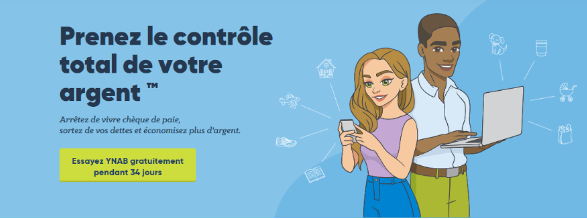

Exploirez les applications
Apprendre à budgéter
Etre inspiré
Obtenir de l'aide
Connexion
Commencer votre essaie gratuit
Fonctionnalites
Notre gamme d'application
Pourquoi nous sommes differents
Tarifications
